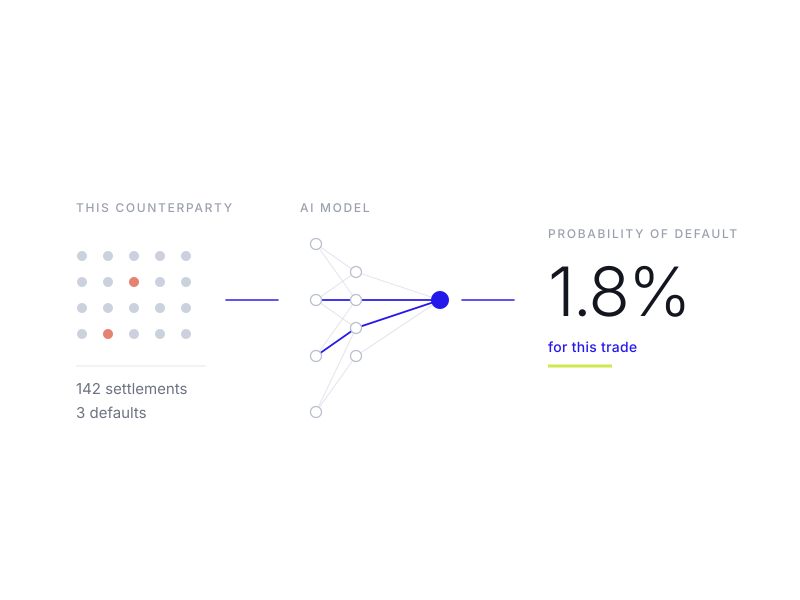

AI prices the risk on every trade
The model computes this counterparty’s probability of default on this trade and sets the collateral from it, instead of demanding the full amount up front whoever you are.
- Post a fraction, pay the balance on delivery
- The more you settle, the less you post
